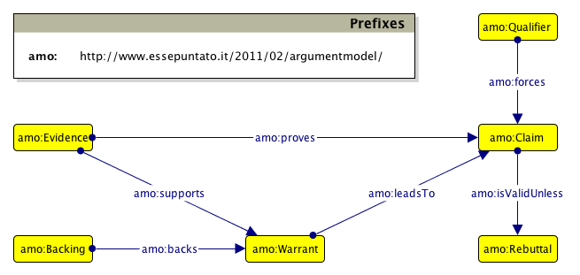
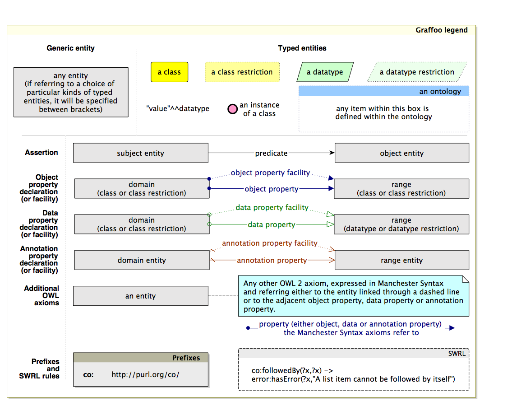

Graffoo - Graphical Framework for OWL Ontologies by Silvio Peroni is licensed under a Creative Commons Attribuzione 3.0 Unported License.
Graffoo, a Graphical Framework for OWL Ontologies, is an open source tool that can be used to present the classes, properties and restrictions within OWL ontologies, or sub-sections of them, as clear and easy-to-understand diagrams. Several Graffoo diagrams have been developed to explain, e.g., SPAR ontologies - that are to be found in the appropriate ontology directories - and the Argument Model Ontology, shown in Figure 1.

Figure 1: The definition of the classes involved in an argument.
The advantages of using such a Grafoo diagram are thus that it displays the logical relationships between elements of an ontology, or a sub-section of an ontology, in a manner that is relatively straightforward to understand, once one has grasped the meaning of the different elements of a Graffoo diagram. These elements are shown and defined in the Graffoo key (Figure 2) and fully presented in the official specification.

Figure 2: The legend for all possible Graffoo objects
Preliminary empirical studies, it appears that Graffoo allows to create representations of OWL ontologies that can be comprehended in detail without the person viewing them having to understand the details of OWL 2 or of any of its linearizations (Turtle, RDF/XML, Manchester Syntax, or OWL/XML).
Graffoo has been developed using the standard library of the yEd diagram editor, a free diagram editor running on Windows, Mac and Linux. The graphml format version of those Graffoo objects is also available. It can be imported as new Section of the yEd Palette.
To install Graffoo, please follow the following steps:
Silvio Peroni (Ph.D.) is a postdoc from the University of Bologna. He maintains a blog about his research.
Graffoo - Graphical Framework for OWL Ontologies by Silvio Peroni is licensed under a Creative Commons Attribuzione 3.0 Unported License.